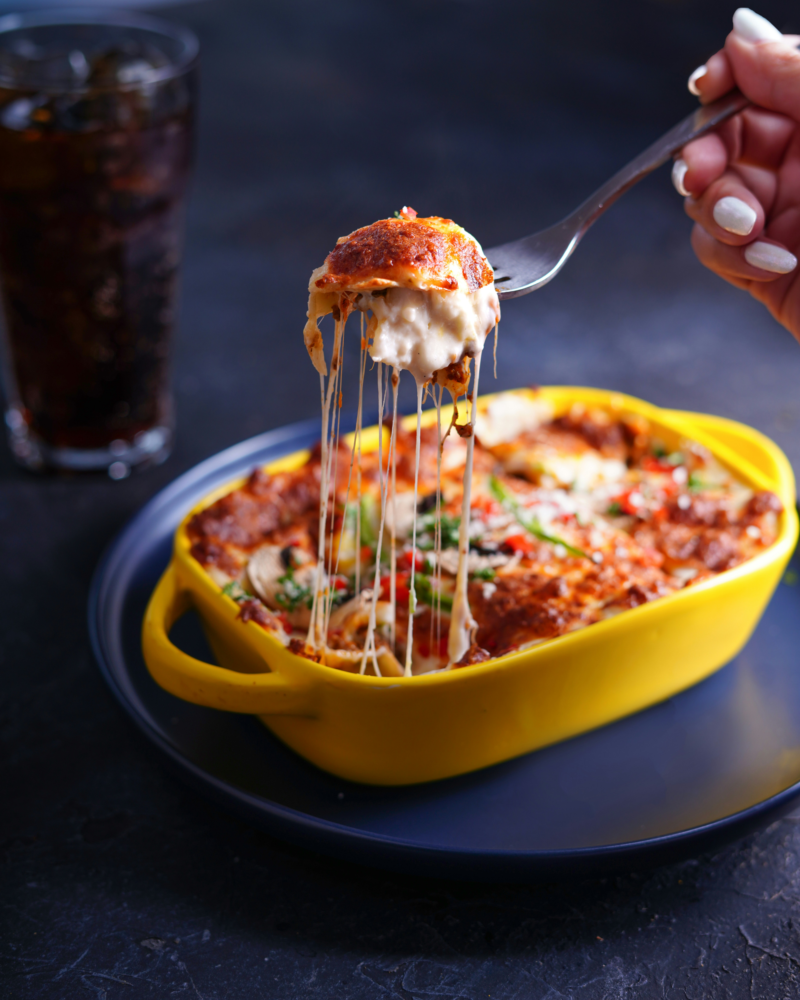

Lasagna

Photo by Maryam Jahanmehr on Unsplash
"Nothing beats classic lasagna. And this is the easiest recipe you will ever make. It can be made ahead and it's freezer-friendly too!" *
This simple lasagna recipe will have your mouth watering with the essentials to make a divine dinner! The recipe will yield 12 servings. It will take 20 minutes to prep and 45 minutes to cook.
Ingredients
- 9 lasagna noodles
- 1 tablespoon olive oil
- 1 pound ground beef
- 1 onion, diced
- Kosher salt and freshly ground black pepper, to taste
- 1 (28-ounce) can crushed tomatoes
- 1 tablespoon Italian seasoning
- 1 (15-ounce) package whole milk ricotta
- 3 ½ cups shredded mozzarella, divided
- 1 large egg, beaten
- ¼ cup freshly grated Parmesan
- 2 tablespoons chopped fresh parsley leaves
Steps
- Preheat oven to 350 degrees F. Lightly oil a 9x13 baking dish or coat with nonstick spray.
- In a large pot of boiling salted water, cook lasagna noodles according to package instructions.
- Heat olive oil in a large cast iron skillet over medium high heat. Add ground beef and onion and cook until beef has browned, about 3-5 minutes, making sure to crumble the beef as it cooks; season with salt and pepper, to taste. Drain excess fat. Stir in tomatoes and Italian seasoning until well combined.
- In a medium bowl, combine ricotta, 1/2 cup mozzarella and egg; set aside.
- Place into oven and bake for 35-45 minutes, or until bubbling. Then broil for 2-3 minutes, or until top is browned in spots. Let cool 15 minutes.
- Serve, garnished with parsley, if desired.
* This recipe and its descriptive content is fully sourced from Damn Delicious.